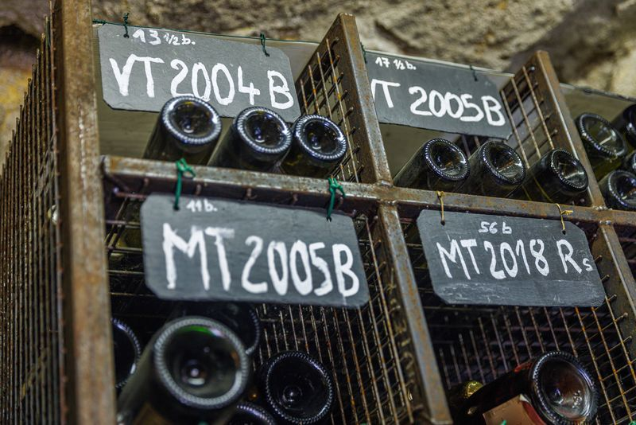

Nos vins
Les Vignerons de Gouvieux produisent des vins effervescents, Perle de Gouvieux blanc de blancs et Perle de Gouvieux rosé, ainsi que des vins tranquilles, avec le Coteaux de Gouvieux Chardonnay et le Coteaux de Gouvieux Pinot noir.
Appréciations
« La méthode traditionnelle 100 % chardonnay se distingue par sa concentration, sa belle acidité structurelle apportant puissance gustative, fraîcheur et longueur en bouche. L’état sanitaire et le tri effectué à la vigne ainsi que la qualité du pressurage amènent beaucoup de netteté. Le dosage modéré (8 g/L) valorise l’expression du cépage et du terroir. »
« Le vin blanc sec de chardonnay peut être remarquable en bon millésime, il va bien souvent se refermer en bouteille pour évoluer lentement en cave, parfois plus de 5 à 10 ans, pour atteindre son épanouissement gustatif et développer son bouquet typique chardonnay. »
Les Vignerons de Gouvieux

Ingrédients et déclaration nutritionnelle de chaque vin, par millésime.
Informations nutritionnelles